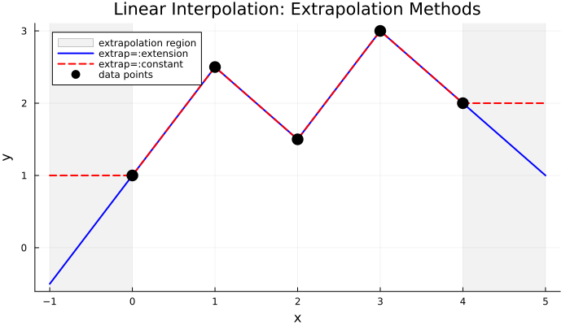
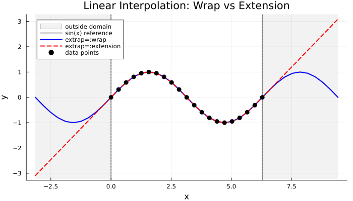
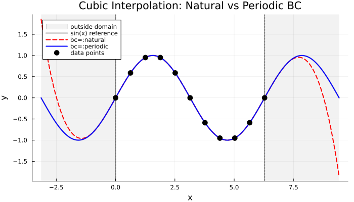
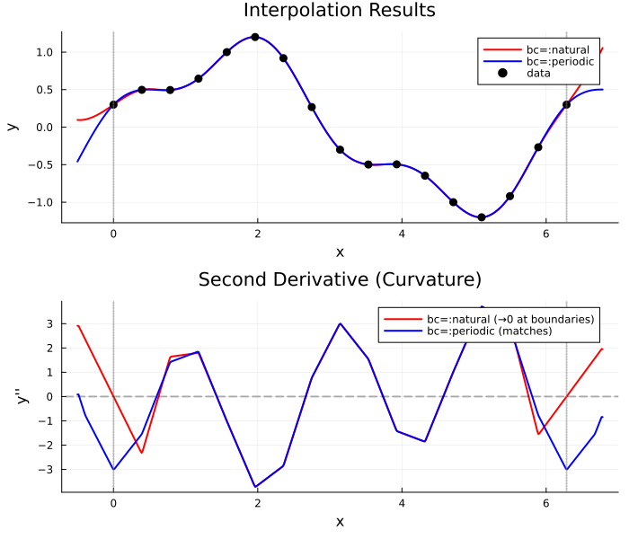
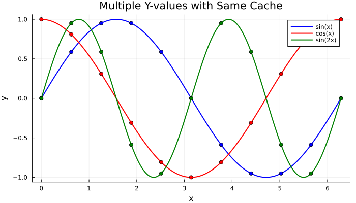

Boundary Conditions and Extrapolation
This tutorial demonstrates different boundary conditions and extrapolation behaviors for both linear and cubic interpolation in FastInterpolations.jl.
using FastInterpolations
using PlotsSet plot defaults for consistent visualization
default(linewidth=2, markersize=6, legend=:topleft, size=(700, 400))Linear Interpolation: Extrapolation Methods
The extrap parameter controls out-of-domain behavior:
| Option | Behavior |
|---|---|
:none | Throws DomainError (default) |
:extension | Extends boundary segments linearly |
:constant | Returns boundary values |
:wrap | Wraps coordinates (for periodic data) |
Sample data
x = [0.0, 1.0, 2.0, 3.0, 4.0]
y = [1.0, 2.5, 1.5, 3.0, 2.0]5-element Vector{Float64}:
1.0
2.5
1.5
3.0
2.0Query points including extrapolation region
xq = range(-1.0, 5.0, 200)-1.0:0.03015075376884422:5.0Different extrapolation methods
y_extension = linear_interp(x, y, collect(xq); extrap=:extension)
y_constant = linear_interp(x, y, collect(xq); extrap=:constant)200-element Vector{Float64}:
1.0
1.0
1.0
1.0
1.0
1.0
1.0
1.0
1.0
1.0
⋮
2.0
2.0
2.0
2.0
2.0
2.0
2.0
2.0
2.0Visualize the results
p = plot(title="Linear Interpolation: Extrapolation Methods",
xlabel="x", ylabel="y")
vspan!([-1.0, 0.0], alpha=0.1, color=:gray, label="extrapolation region")
vspan!([4.0, 5.0], alpha=0.1, color=:gray, label=nothing)
plot!(xq, y_extension, label="extrap=:extension", color=:blue)
plot!(xq, y_constant, label="extrap=:constant", color=:red, linestyle=:dash)
scatter!(x, y, label="data points", color=:black, markersize=8)
Linear Interpolation: Wrap Extrapolation
When extrap=:wrap, the function wraps query points to the domain [x[1], x[end]). This is useful for periodic functions like sin, cos, or any cyclic data.
Note: For smooth wrapping, ensure y[1] ≈ y[end].
Periodic data: one complete sine wave
n = 21
x_periodic = collect(range(0.0, 2π, n))
y_periodic = sin.(x_periodic) # y[1] = y[end] = 021-element Vector{Float64}:
0.0
0.3090169943749474
0.5877852522924731
0.8090169943749475
0.9510565162951535
1.0
0.9510565162951536
0.8090169943749475
0.5877852522924732
0.3090169943749475
⋮
-0.587785252292473
-0.8090169943749473
-0.9510565162951535
-1.0
-0.9510565162951536
-0.8090169943749476
-0.5877852522924734
-0.3090169943749476
-2.4492935982947064e-16Query points extending beyond the domain
xq_extended = range(-π, 3π, 300)-3.141592653589793:0.04202799536574974:9.42477796076938Compare wrap vs extension
y_wrap = linear_interp(x_periodic, y_periodic, collect(xq_extended); extrap=:wrap)
y_ext = linear_interp(x_periodic, y_periodic, collect(xq_extended); extrap=:extension)
y_true = sin.(xq_extended)300-element Vector{Float64}:
-1.2246467991473532e-16
-0.04201562375005738
-0.08395704402592015
-0.12575018840358781
-0.16732124632799675
-0.20859679946928322
-0.24950395138633755
-0.28997045626865714
-0.32992484652912163
-0.36929655902235753
⋮
0.329924846529121
0.28997045626865825
0.24950395138633863
0.2085967994692839
0.1673212463279974
0.12575018840358848
0.08395704402592083
0.04201562375005763
3.6739403974420594e-16Visualize
p2 = plot(title="Linear Interpolation: Wrap vs Extension", xlabel="x", ylabel="y")
vspan!([-π, 0.0], alpha=0.1, color=:gray, label="outside domain")
vspan!([2π, 3π], alpha=0.1, color=:gray, label=nothing)
plot!(xq_extended, y_true, label="sin(x) reference", color=:lightgray, linewidth=3)
plot!(xq_extended, y_wrap, label="extrap=:wrap", color=:blue)
plot!(xq_extended, y_ext, label="extrap=:extension", color=:red, linestyle=:dash)
vline!([0.0, 2π], color=:black, linestyle=:dot, alpha=0.5, label=nothing)
scatter!(x_periodic, y_periodic, label="data points", color=:black, markersize=5)
Cubic Interpolation: Natural vs Periodic BC
Cubic spline boundary conditions control the behavior at domain edges:
| BC | Description |
|---|---|
NaturalBC() | S''(x₁) = S''(xₙ) = 0 (default) |
PeriodicBC() | S'(x₁) = S'(xₙ), S''(x₁) = S''(xₙ) (C² continuity) |
The periodic BC uses the Sherman-Morrison formula to solve the cyclic tridiagonal system efficiently.
Fewer points to see the difference more clearly
n_cubic = 11
x_cubic = collect(range(0.0, 2π, n_cubic))
y_cubic = sin.(x_cubic)11-element Vector{Float64}:
0.0
0.5877852522924731
0.9510565162951535
0.9510565162951536
0.5877852522924732
1.2246467991473532e-16
-0.587785252292473
-0.9510565162951535
-0.9510565162951536
-0.5877852522924734
-2.4492935982947064e-16Query points
xq_cubic = range(-π, 3π, 400)-3.141592653589793:0.03149466319388264:9.42477796076938Different boundary conditions
y_natural = cubic_interp(x_cubic, y_cubic, xq_cubic; bc=NaturalBC(), extrap=:extension)
y_periodic_bc = cubic_interp(x_cubic, y_cubic, xq_cubic; bc=PeriodicBC(), extrap=:extension)
y_sin = sin.(xq_cubic)400-element Vector{Float64}:
-1.2246467991473532e-16
-0.03148945678687939
-0.0629476813284808
-0.09434347235666257
-0.12564569052682642
-0.1568232893029141
-0.18784534575034612
-0.21868109120637594
-0.24929994179742518
-0.27967152877314616
⋮
0.24929994179742543
0.2186810912063762
0.1878453457503468
0.15682328930291478
0.12564569052682756
0.09434347235666193
0.06294768132848061
0.03148945678687919
3.6739403974420594e-16Visualize
p3 = plot(title="Cubic Interpolation: Natural vs Periodic BC", xlabel="x", ylabel="y")
vspan!([-π, 0.0], alpha=0.1, color=:gray, label="outside domain")
vspan!([2π, 3π], alpha=0.1, color=:gray, label=nothing)
plot!(xq_cubic, y_sin, label="sin(x) reference", color=:lightgray, linewidth=3)
plot!(xq_cubic, y_natural, label="bc=:natural", color=:red, linestyle=:dash)
plot!(xq_cubic, y_periodic_bc, label="bc=:periodic", color=:blue)
vline!([0.0, 2π], color=:black, linestyle=:dot, alpha=0.5, label=nothing)
scatter!(x_cubic, y_cubic, label="data points", color=:black, markersize=6)
C² Continuity Visualization
The key difference between natural and periodic BC is at the boundary:
- Natural BC: Second derivative is forced to zero at boundaries
- Periodic BC: First AND second derivatives match at boundaries
More complex periodic function
n_c2 = 17
x_c2 = collect(range(0.0, 2π, n_c2))
y_c2 = sin.(x_c2) .+ 0.3 .* cos.(3 .* x_c2)17-element Vector{Float64}:
0.3
0.4974884620746167
0.49497474683058323
0.6467156727579007
1.0
1.2010433922646726
0.9192388155425119
0.26787840265556295
-0.2999999999999999
-0.49748846207461683
-0.4949747468305835
-0.6467156727579002
-0.9999999999999999
-1.2010433922646726
-0.9192388155425119
-0.2678784026555645
0.29999999999999977Fine query grid
xq_c2 = collect(range(-0.5, 2π + 0.5, 500))500-element Vector{Float64}:
-0.5
-0.48540443826216517
-0.4708088765243303
-0.45621331478649546
-0.44161775304866063
-0.4270221913108258
-0.4124266295729909
-0.3978310678351561
-0.38323550609732127
-0.36863994435948644
⋮
6.666420813276908
6.681016375014742
6.695611936752577
6.710207498490412
6.724803060228247
6.739398621966082
6.753994183703917
6.768589745441751
6.783185307179586Interpolate with both BC types
y_nat = cubic_interp(x_c2, y_c2, xq_c2; bc=NaturalBC(), extrap=:extension)
y_per = cubic_interp(x_c2, y_c2, xq_c2; bc=PeriodicBC())500-element Vector{Float64}:
-0.45762337280979876
-0.4317089671893338
-0.4057762538940114
-0.3798539287562867
-0.3539706876086153
-0.32815522628345256
-0.30243624061325397
-0.27684242643047496
-0.2514019868383753
-0.22613699962988418
⋮
0.4964463867293528
0.4979955894293601
0.4992244779400848
0.5001560091395938
0.5008136750901829
0.5012209678541479
0.5014013794937843
0.5013784020713878
0.5011755276492541Numerical second derivative (curvature)
function numerical_d2(xq, yq)
h = xq[2] - xq[1]
d2y = similar(yq)
d2y[1] = (yq[3] - 2yq[2] + yq[1]) / h^2
d2y[end] = (yq[end] - 2yq[end-1] + yq[end-2]) / h^2
for i in 2:length(yq)-1
d2y[i] = (yq[i+1] - 2yq[i] + yq[i-1]) / h^2
end
return d2y
end
d2y_nat = numerical_d2(xq_c2, y_nat)
d2y_per = numerical_d2(xq_c2, y_per)500-element Vector{Float64}:
0.08593925058943826
0.08593925058943826
-0.048763728103306675
-0.1834667067973545
-0.3181696854911418
-0.4528726641846684
-0.5875756428784557
-0.7199656693184193
-0.8236024770386862
-0.9077629644814195
⋮
-1.5801404229335962
-1.5036077270532435
-1.3958443484535554
-1.2855687266602178
-1.1752931048671407
-1.0650174830753667
-0.9547418612815078
-0.8444662394897336
-0.8444662394897336Two subplots
p4a = plot(title="Interpolation Results", xlabel="x", ylabel="y", legend=:topright)
plot!(p4a, xq_c2, y_nat, label="bc=:natural", color=:red)
plot!(p4a, xq_c2, y_per, label="bc=:periodic", color=:blue)
scatter!(p4a, x_c2, y_c2, label="data", color=:black, markersize=5)
vline!(p4a, [0.0, 2π], color=:gray, linestyle=:dot, alpha=0.5, label=nothing)
p4b = plot(title="Second Derivative (Curvature)", xlabel="x", ylabel="y''", legend=:topright)
plot!(p4b, xq_c2, d2y_nat, label="bc=:natural (→0 at boundaries)", color=:red)
plot!(p4b, xq_c2, d2y_per, label="bc=:periodic (matches)", color=:blue)
vline!(p4b, [0.0, 2π], color=:gray, linestyle=:dot, alpha=0.5, label=nothing)
hline!(p4b, [0.0], color=:black, linestyle=:dash, alpha=0.3, label=nothing)
plot(p4a, p4b, layout=(2, 1), size=(700, 600))
Callable Interpolant Objects
For repeated interpolation at different query points, create an interpolant object once and call it multiple times. This is more efficient for repeated queries.
x_call = collect(range(0.0, 2π, 51))
y_call = sin.(x_call)51-element Vector{Float64}:
0.0
0.12533323356430426
0.2486898871648548
0.3681245526846779
0.4817536741017153
0.5877852522924731
0.6845471059286886
0.7705132427757893
0.8443279255020151
0.9048270524660196
⋮
-0.844327925502015
-0.7705132427757896
-0.684547105928689
-0.5877852522924734
-0.4817536741017153
-0.36812455268467786
-0.24868988716485535
-0.12533323356430465
-2.4492935982947064e-16Create interpolants with different extrapolation modes
linear_ext = LinearInterpolant(x_call, y_call; extrap=:extension)
linear_wrap_itp = LinearInterpolant(x_call, y_call; extrap=:wrap)
cubic_nat = cubic_interp(x_call, y_call; extrap=:extension)
cubic_per = cubic_interp(x_call, y_call; bc=PeriodicBC())CubicInterpolant{Float64, CubicSplineCache{Float64, Vector{Float64}, LinearAlgebra.LU{Float64, LinearAlgebra.Tridiagonal{Float64, Vector{Float64}}, Vector{Int64}}, FastInterpolations.PeriodicData{Float64}}}(CubicSplineCache{Float64, Vector{Float64}, LinearAlgebra.LU{Float64, LinearAlgebra.Tridiagonal{Float64, Vector{Float64}}, Vector{Int64}}, FastInterpolations.PeriodicData{Float64}}([0.0, 0.12566370614359174, 0.25132741228718347, 0.37699111843077515, 0.5026548245743669, 0.6283185307179586, 0.7539822368615503, 0.8796459430051421, 1.0053096491487339, 1.1309733552923256 … 5.152211951887261, 5.277875658030853, 5.403539364174444, 5.529203070318036, 5.654866776461628, 5.7805304826052195, 5.906194188748811, 6.031857894892402, 6.157521601035994, 6.283185307179586], [0.0, 0.12566370614359174, 0.12566370614359174, 0.12566370614359168, 0.1256637061435918, 0.12566370614359168, 0.12566370614359168, 0.1256637061435918, 0.1256637061435918, 0.12566370614359168 … 0.1256637061435919, 0.12566370614359101, 0.1256637061435919, 0.1256637061435919, 0.1256637061435919, 0.1256637061435919, 0.12566370614359101, 0.1256637061435919, 0.1256637061435919, 0.0], LinearAlgebra.LU{Float64, LinearAlgebra.Tridiagonal{Float64, Vector{Float64}}, Vector{Int64}}(Tridiagonal([0.3333333333333332, 0.2727272727272727, 0.26829268292682923, 0.26797385620915043, 0.2679509632224167, 0.2679493195682778, 0.2679492015591602, 0.26794919308648635, 0.26794919247817556, 0.26794919243450094 … 0.26794919243112275, 0.2679491924311227, 0.2679491924311227, 0.2679491924311217, 0.26794919243112364, 0.26794919243112275, 0.2679491924311227, 0.2679491924311227, 0.2679491924311217, 0.26794919243112364], [0.3769911184307754, 0.46076692252650303, 0.46838290471702365, 0.46894017170657404, 0.46898023665353517, 0.4689831134710926, 0.4689833200187635, 0.4689833348482268, 0.46898333591293423, 0.4689833359893766 … 0.46898333599529024, 0.46898333599529024, 0.4689833359952887, 0.4689833359952886, 0.46898333599529013, 0.46898333599529024, 0.46898333599529024, 0.4689833359952887, 0.4689833359952886, 0.3433196298516982], [0.12566370614359174, 0.12566370614359168, 0.1256637061435918, 0.12566370614359168, 0.12566370614359168, 0.1256637061435918, 0.1256637061435918, 0.12566370614359168, 0.12566370614359168, 0.12566370614359168 … 0.1256637061435919, 0.1256637061435919, 0.12566370614359101, 0.1256637061435919, 0.1256637061435919, 0.1256637061435919, 0.1256637061435919, 0.12566370614359101, 0.1256637061435919, 0.1256637061435919]), [1, 2, 3, 4, 5, 6, 7, 8, 9, 10 … 41, 42, 43, 44, 45, 46, 47, 48, 49, 50], 0), FastInterpolations.PeriodicData{Float64}([2.912737615475016, -0.7804656918302846, 0.20912515184612226, -0.05603491555420435, 0.01501451037069522, -0.0040231259285765, 0.0010779933436107835, -0.0002888474458666352, 7.739643985575737e-5, -2.0738313556394147e-5 … -2.073831355639413e-5, 7.73964398557573e-5, -0.00028884744586663713, 0.0010779933436107871, -0.0040231259285764985, 0.015014510370695205, -0.056034915554204326, 0.20912515184612357, -0.7804656918302869, 2.9127376154750144], 6.283185307179586)), [0.0, 0.12533323356430426, 0.2486898871648548, 0.3681245526846779, 0.4817536741017153, 0.5877852522924731, 0.6845471059286886, 0.7705132427757893, 0.8443279255020151, 0.9048270524660196 … -0.9048270524660196, -0.844327925502015, -0.7705132427757896, -0.684547105928689, -0.5877852522924734, -0.4817536741017153, -0.36812455268467786, -0.24868988716485535, -0.12533323356430465, -2.4492935982947064e-16], [-2.4195923042924505e-14, -0.12549825216630933, -0.2490173219269456, -0.36860923976504545, -0.48238796969557446, -0.5885591531793966, -0.6854484072293614, -0.771527730430338, -0.8454396004340299, -0.9060183828978268 … 0.9060183828978209, 0.845439600434035, 0.771527730430332, 0.6854484072293606, 0.5885591531794081, 0.48238796969555914, 0.36860923976505855, 0.24901732192693868, 0.12549825216632113, -2.4195923042924505e-14], Val{:wrap}())Evaluate at test points
test_points = [-0.5, 0.5, π, 2π + 0.5]
println("Evaluation at test points:")
println("| x | Linear (ext) | Linear (wrap) | Cubic (natural) | Cubic (periodic) |")
println("|---|--------------|---------------|-----------------|------------------|")
for xi in test_points
v1 = round(linear_ext(xi), digits=4)
v2 = round(linear_wrap_itp(xi), digits=4)
v3 = round(cubic_nat(xi), digits=4)
v4 = round(cubic_per(xi), digits=4)
println("| $xi | $v1 | $v2 | $v3 | $v4 |")
endEvaluation at test points:
| x | Linear (ext) | Linear (wrap) | Cubic (natural) | Cubic (periodic) |
|---|--------------|---------------|-----------------|------------------|
| -0.5 | -0.4987 | -0.4794 | -0.4792 | -0.4794 |
| 0.5 | 0.4794 | 0.4794 | 0.4794 | 0.4794 |
| 3.141592653589793 | 0.0 | 0.0 | 0.0 | 0.0 |
| 6.783185307179586 | 0.4987 | 0.4794 | 0.4792 | 0.4794 |Pre-built Cache for Multiple Y-values
When you need to interpolate many different y-values on the same x-grid, pre-build the cache for maximum efficiency.
x_cache = collect(range(0.0, 2π, 51))
y1_cache = sin.(x_cache)
y2_cache = cos.(x_cache)
y3_cache = sin.(2 .* x_cache)51-element Vector{Float64}:
0.0
0.2486898871648548
0.4817536741017153
0.6845471059286886
0.8443279255020151
0.9510565162951535
0.9980267284282716
0.9822872507286887
0.9048270524660195
0.7705132427757893
⋮
-0.9048270524660197
-0.9822872507286885
-0.9980267284282716
-0.9510565162951538
-0.8443279255020152
-0.6845471059286885
-0.4817536741017163
-0.2486898871648556
-4.898587196589413e-16Pre-build cache (computed once)
cache = CubicSplineCache(x_cache; bc=PeriodicBC())CubicSplineCache{Float64, Vector{Float64}, LinearAlgebra.LU{Float64, LinearAlgebra.Tridiagonal{Float64, Vector{Float64}}, Vector{Int64}}, FastInterpolations.PeriodicData{Float64}}([0.0, 0.12566370614359174, 0.25132741228718347, 0.37699111843077515, 0.5026548245743669, 0.6283185307179586, 0.7539822368615503, 0.8796459430051421, 1.0053096491487339, 1.1309733552923256 … 5.152211951887261, 5.277875658030853, 5.403539364174444, 5.529203070318036, 5.654866776461628, 5.7805304826052195, 5.906194188748811, 6.031857894892402, 6.157521601035994, 6.283185307179586], [0.0, 0.12566370614359174, 0.12566370614359174, 0.12566370614359168, 0.1256637061435918, 0.12566370614359168, 0.12566370614359168, 0.1256637061435918, 0.1256637061435918, 0.12566370614359168 … 0.1256637061435919, 0.12566370614359101, 0.1256637061435919, 0.1256637061435919, 0.1256637061435919, 0.1256637061435919, 0.12566370614359101, 0.1256637061435919, 0.1256637061435919, 0.0], LinearAlgebra.LU{Float64, LinearAlgebra.Tridiagonal{Float64, Vector{Float64}}, Vector{Int64}}(Tridiagonal([0.3333333333333332, 0.2727272727272727, 0.26829268292682923, 0.26797385620915043, 0.2679509632224167, 0.2679493195682778, 0.2679492015591602, 0.26794919308648635, 0.26794919247817556, 0.26794919243450094 … 0.26794919243112275, 0.2679491924311227, 0.2679491924311227, 0.2679491924311217, 0.26794919243112364, 0.26794919243112275, 0.2679491924311227, 0.2679491924311227, 0.2679491924311217, 0.26794919243112364], [0.3769911184307754, 0.46076692252650303, 0.46838290471702365, 0.46894017170657404, 0.46898023665353517, 0.4689831134710926, 0.4689833200187635, 0.4689833348482268, 0.46898333591293423, 0.4689833359893766 … 0.46898333599529024, 0.46898333599529024, 0.4689833359952887, 0.4689833359952886, 0.46898333599529013, 0.46898333599529024, 0.46898333599529024, 0.4689833359952887, 0.4689833359952886, 0.3433196298516982], [0.12566370614359174, 0.12566370614359168, 0.1256637061435918, 0.12566370614359168, 0.12566370614359168, 0.1256637061435918, 0.1256637061435918, 0.12566370614359168, 0.12566370614359168, 0.12566370614359168 … 0.1256637061435919, 0.1256637061435919, 0.12566370614359101, 0.1256637061435919, 0.1256637061435919, 0.1256637061435919, 0.1256637061435919, 0.12566370614359101, 0.1256637061435919, 0.1256637061435919]), [1, 2, 3, 4, 5, 6, 7, 8, 9, 10 … 41, 42, 43, 44, 45, 46, 47, 48, 49, 50], 0), FastInterpolations.PeriodicData{Float64}([2.912737615475016, -0.7804656918302846, 0.20912515184612226, -0.05603491555420435, 0.01501451037069522, -0.0040231259285765, 0.0010779933436107835, -0.0002888474458666352, 7.739643985575737e-5, -2.0738313556394147e-5 … -2.073831355639413e-5, 7.73964398557573e-5, -0.00028884744586663713, 0.0010779933436107871, -0.0040231259285764985, 0.015014510370695205, -0.056034915554204326, 0.20912515184612357, -0.7804656918302869, 2.9127376154750144], 6.283185307179586))Interpolate multiple y-values with the same cache
xq_cache = collect(range(0.0, 2π, 200))
result1 = cubic_interp(cache, y1_cache, xq_cache)
result2 = cubic_interp(cache, y2_cache, xq_cache)
result3 = cubic_interp(cache, y3_cache, xq_cache)200-element Vector{Float64}:
0.0
0.06310443403218294
0.12595838785105368
0.18831138124330002
0.24991293401659467
0.3105153495481386
0.3698814173779859
0.4277763958858287
0.4839655437765672
0.5382198343142626
⋮
-0.483965543776568
-0.4277763958858289
-0.3698814173779871
-0.3105153495481391
-0.24991293401659448
-0.18831138124330082
-0.12595838785105373
-0.06310443403218406
0.0Visualize
p5 = plot(title="Multiple Y-values with Same Cache", xlabel="x", ylabel="y", legend=:topright)
plot!(p5, xq_cache, result1, label="sin(x)", color=:blue)
plot!(p5, xq_cache, result2, label="cos(x)", color=:red)
plot!(p5, xq_cache, result3, label="sin(2x)", color=:green)
scatter!(p5, x_cache[1:5:end], y1_cache[1:5:end], label=nothing, color=:blue, markersize=4)
scatter!(p5, x_cache[1:5:end], y2_cache[1:5:end], label=nothing, color=:red, markersize=4)
scatter!(p5, x_cache[1:5:end], y3_cache[1:5:end], label=nothing, color=:green, markersize=4)